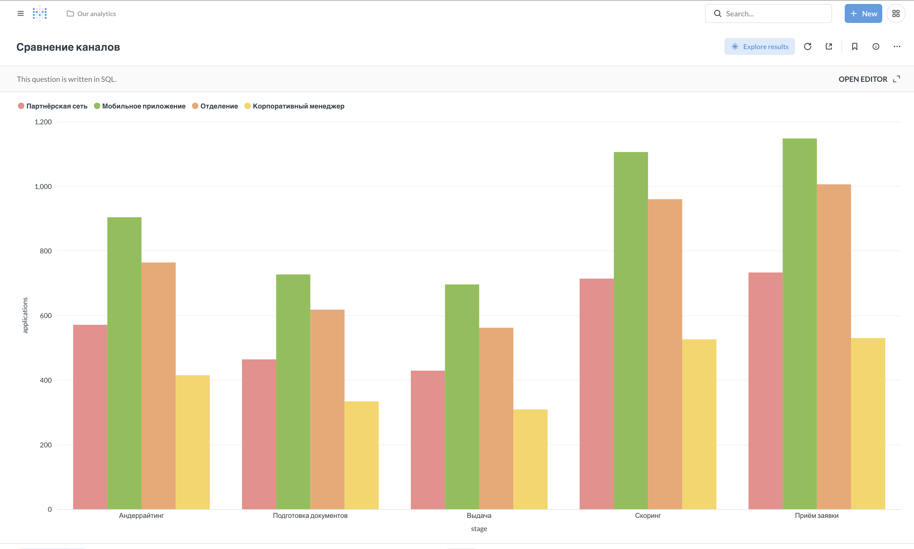

Классический анализ данных целиком: осмотреть, проверить, вычистить, посчитать — и перенести итоговый запрос в BI новой панелью. Всё делается запросами, pandas в этом кейсе не нужен.
Управленческий вопрос. Где конвейер теряет время и заявки — и что чинить первым?
Стенд поднят и проверен: ./run.sh up, затем
python3 tools/check_env.py — последняя строка должна быть
«всё на месте». Порядок установки с нуля —
в документе установки, для JupyterHub банка —
в отдельной инструкции.
Порядок работы с незнакомой выгрузкой не зависит от инструмента и от того, кто её делает — человек или агент. Этапов пять, и пропуск любого из них стоит дороже, чем его прохождение.
| Этап | Что происходит | Чем заканчивается |
|---|---|---|
| 1. Осмотр | объём, границы периода, состав срезов | понимание, о чём вообще данные |
| 2. Проверки | повторы, служебные записи, невозможные значения, разрывы между источниками | список того, чему верить нельзя |
| 3. Чистый слой | правило чистки оформляется представлением | одно правило на все отчёты |
| 4. Расчёт | воронка, сроки этапов, потери | числа, на которые можно ссылаться |
| 5. Публикация | итоговый запрос уезжает в панель BI | показатель, который обновляется сам |
Сам метод — что такое очистка данных, почему медиана вместо среднего, как читать распределение — разобран отдельно: тетрадь «Разведочный анализ» в репозитории практики и лонгрид здесь. Этот кейс — то же самое, доведённое до панели в BI.
2.6_кейс_кредитный_конвейер/2.6.1_конвейер_sql.ipynb. Первая ячейка подключает базу: from tools.sqlcell import setup; setup(). После неё ячейка, начинающаяся с %%sql, содержит чистый запрос и печатает результат таблицей.
Сколько строк, какой период, как распределены заявки по каналам. Первый запрос к незнакомым данным — всегда про объём и границы.
Повторы строк, служебные записи, невозможные значения, разрывы между источниками. Это самая важная часть кейса: именно здесь решается, можно ли верить всему, что посчитается дальше.
Конверсия в выдачу считается дважды: как есть и после отсева повторов и служебных записей.
Правило чистки оформляется представлениями v_applications_clean и v_stage_events_clean. Дальше все расчёты идут поверх них — правило живёт в одном месте и не расходится между отчётами.
Куда доходят заявки, сколько времени занимает этап (медиана и P90, потому что среднее по длительностям обманывает), где теряются заявки.
Итоговый запрос — срок этапа в разрезе канала — оформляется представлением v_pipeline_stage_sla. Дальше руками: Создать → Запрос → Свой SQL-запрос, источник «Учебная база банка», вставить запрос, выполнить, сменить тип отображения на столбчатую диаграмму, сохранить как «Сроки этапов конвейера».
Один раз пройти этот путь руками полезно: дальше то же самое будет делать агент, и станет видно, что именно он делает за вас.

На стенде это Metabase, но устройство у всех подобных систем одинаковое, и понимать его нужно ровно на три уровня.
Отсюда два практических следствия. Первое: любой расчёт, который вы довели
до одного SELECT, уже готов стать постоянной панелью — переносится
текстом запроса. Второе: раз карточка — это SQL плюс тип отображения, её умеет
создать не только человек. Всё то же самое делает через API агент —
это отдельный кейс.
В списке источников рядом с учебной базой лежит демонстрационная, встроенная в саму систему. Таблиц конвейера в ней нет — если запрос «не видит» таблицу, первым делом проверьте выбранный источник.
| Канал | Заявок | Медиана, ч | P90, ч |
|---|---|---|---|
| Партнёрская сеть | 571 | 54,9 | 106,9 |
| Мобильное приложение | 904 | 37,9 | 69,1 |
| Отделение | 764 | 37,2 | 66,5 |
| Корпоративный менеджер | 415 | 36,7 | 62,7 |
Андеррайтинг в партнёрской сети идёт в полтора раза дольше, чем в остальных каналах. Это ещё не вывод, а вопрос к владельцу процесса: состав заявок, режим работы или способ фиксации времени?
Почему так и что с этим делать — в лонгриде «Разведочный анализ»; те же операции в SQL и в pandas — в памятке. Дальше: тот же анализ, но запросом словами.